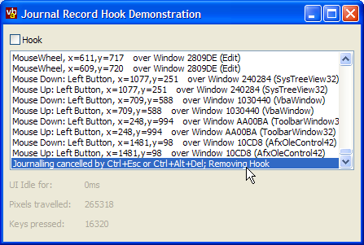

VB5 Journal Record Hook Sample (13K)
VB5 Journal Record Hook Sample (13K)
 VB6 Journal Record Hook Sample (12K)
VB6 Journal Record Hook Sample (12K)
 27 Jun 2003
27 Jun 2003
First Posted
 Win32 Hooks in VB - The vbAccelerator Hook Library
Win32 Hooks in VB - The vbAccelerator Hook Library

Using a Journal Record Hook to Capture Mouse and Key Events from any System Window
Normally, a Windows hook used in Visual Basic can only act on Windows within the process in which it is running. The exception to this rule is the Windows Journal Hook, which allows capturing of mouse and keyboard events from any Window on the system. Many thanks to the coder known only by his email alias "Mr Yummys" for sending the original sample which showed how to use this technique and on which the demonstration is derived.
About the Demonstration
The sample code demonstrates how to create a Journal Hook and logs a message for each key event and mouse event (except Mouse Move events, which it internally counts). It also demonstrates how to find information about which Window the mouse is over for each type of event, and to get its class name.
As a useless sideline, the demonstration also counts the number of key presses, pixels moved by the mouse and shows how long the UI has been idle. (As you will see from the picture above, in the process of typing this article, that ran to well over 16,000 key presses and 250,000 pixels. Don't ever say I don't work hard to get this site done for you!).
Incidentally, on Windows 2000 and XP systems you can also get the idle time using the API call GetLastInputInfo.
Using Journal Hooks
Using The WH_JOURNALRECORD Hook
Installing this hook using the vbAccelerator Hook library is straightforward. Once the library is referenced, you implement the IWindowsHook interface and then call InstallHook:
Implements IWindowsHook
Private Sub Form_Load()
InstallHook Me, WH_JOURNALRECORD
End Sub
Private Sub Form_QueryUnload( _
Cancel As Integer, UnloadMode As Integer)
RemoveHook Me, WH_JOURNALRECORD
End Sub
Private Function IWindowsHook_HookProc( _
ByVal eType As vbalWinHook.EHTHookTypeConstants, _
ByVal nCode As Long, _
ByVal wParam As Long, _
ByVal lParam As Long, _
bConsume As Boolean) As Long
If (eType = WH_JOURNALRECORD) Then
Dim cEvent As cJournallParam
Set cEvent = JournalRecordlParam(lParam)
' cEvent now contains information about
' the Journal record message.
End If
End Function
The cJournallParam contains the information stored in the Windows API EVENTMSG structure. This structure isn't very well documented in the SDK and also the members which get set depend on the message being sent. Here's a quick guide to the values:
| Member | Notes |
| Msg | The Windows Message Code of this particular message. Always populated. Valid values are any of the Windows Messages associated with the keyboard or the mouse, i.e. WM_KEYDOWN, WM_KEYUP, WM_CHAR, WM_MOUSEMOVE, WM_LBUTTONDOWN, WM_LBUTTONUP, WM_LBUTTONDBLCLK, WM_RBUTTONDOWN, WM_RBUTTONUP, WM_RBUTTONDBLCLK, WM_MBUTTONDOWN, WM_MBUTTONUP, WM_MBUTTONDBLCLK, WM_MOUSEWHEEL, WM_SYSTEMKEYDOWN, WM_SYSTEMKEYUP. |
| hWnd | The Windows handle that the mouse is over for mouse messages. For keyboard messages, this value does not get set. This means it is difficult to determine where a particular keyboard message was destined. |
| lParamLow | For keyboard messages, the low byte of this parameter contains the virtual key code of the key that was pressed. For mouse messages, the x position of the cursor. |
| lParamHigh | For keyboard messages, this mesage is not relevant. For mouse messages, the y position of the cursor. |
| MsgTime | A long value representing the time at which the message was posted. |
The demonstration project shows how to use these parameters along with a handful of other useful API calls to log information about the messages.
The WM_CANCELJOURNAL Message
Whenever the keystrokes Ctrl+Esc or Ctrl+Alt+Del are used, Windows internally stops sending messages through the Journal Hook. From this point your hook stays installed in the system but does not receive any further information. The only thing you can do if you want to continue tracking messages after that point is to remove your hook and re-install it.
Windows informs you when this has occurred using the WM_CANCELJOURNAL message, which is posted to your application. In this sample I have installed a WH_GETMESSAGE hook to catch this message, however, it should also be possible to use a subclass on the top level window. (The top level window in a VB application is a special hidden Window that VB creates which can be obtained from any form using the GetWindow API call with flag GW_OWNER).
For the purposes of the sample, receipt of WM_CANCELJOURNAL causes the application to uninstall the hook. However, in real life you could re-install the hook again directly afterwards.
Conclusion
Using a Journal Record hook, you can intercept keyboard and mouse messages for any application on the system. This could be useful for measuring system use, determining idle time and scheduling intensive background tasks.